Interactive Coloring Book Ashley Park & Wenke Huang -
Design report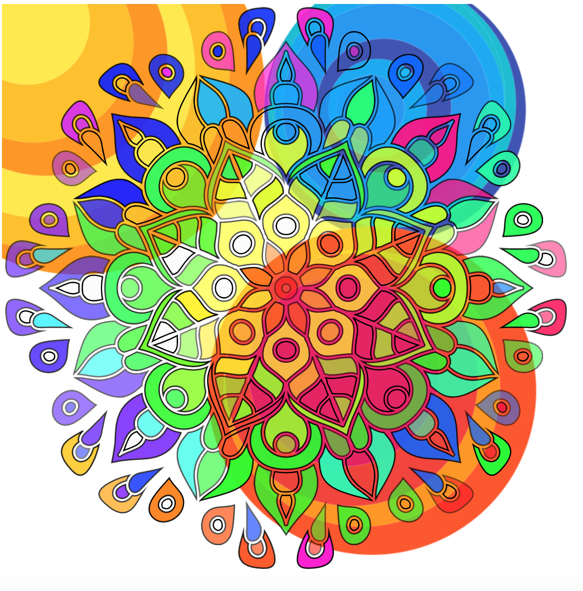
Puddle Painting - Fill in the individual elements with color or create your own patterns using the “Color Pour” setting to “pour” out puddles of paint.
Cycle 1
Checkpoint 1: Task decomposition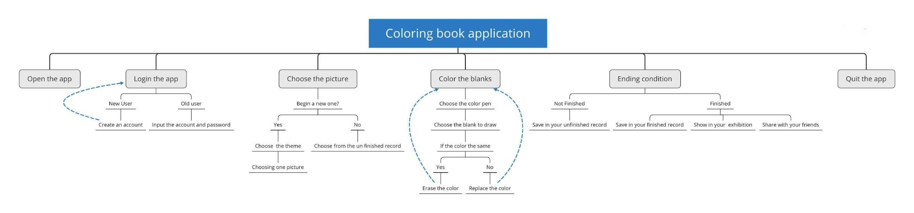
Checkpoint 2: Observations
Step 1: Observation study protocol
- (2 min) Introductions
- Who we are
- Purpose of this study (user interface design class)
- What data we’ll collect and how we’ll use it (basic using habit improve app)
- Given that context, want to participate in this study?
- (3 min) Get context: Learn about their coloring habits
- What materials do you like to use? Pros and cons
- Do you use interactive coloring apps? Pros and cons of apps vs. pen and paper
- What colors do you like to use? Do you prefer a wide range of colors or a preselected palette?
- How would you describe your artistic style?
- Do you usually stick to one artform or like to explore?
- What is something really difficult for you to create (electronically and on paper), or a difficult technique for you?
- (3 min) Explain think aloud. One of us demonstrates while taking notes.
- (5 min) Ask participants to color in a drawing
- Ask for clarification:
- How did you choose where to start coloring?
- How did you choose which coloring utensils to use?
- How do you choose which colors to use?
- What is the thinking behind your workspace organization?
- (1 min) Thank participants for their time. Take picture of their notes.
Step 2: User study
USER 1
Description of user: Male who majors in computer science and likes experiencing different cultures and playing games.
Rough transcription of interview:
Context
- What materials do you like to use? Pencil; It is easy for you to erase and it is the fundamental of the drawing
- Do you use interactive coloring apps? Do not really use those apps, not much demand for drawing. With apps you can quickly to fill a lot of area and easily erase, but you need to be familiar with the app to use. Paper is easier to use with teaching.
- What kind of colors do you like to use? Preselected palette. Too many colors make it hard to choose. —>less choices is better design
- How would you describe your artistic style? Straight, flat, easy to draw and express something simple
- Do you usually stick to one artform or do you like to explore? One is enough
- What is something really difficult for you to create? Something complex where it is hard to change a small area
Clarification
- How did you choose where to start coloring? Somewhere big or eye-catching
- How did you choose which coloring utensils to use? Something that would make it easy to draw the picture
- How do you choose which colors to use? Referred to a color in the real world
- What is the thinking behind your workspace organization? The workspace should be straightforward
Image of coloring page: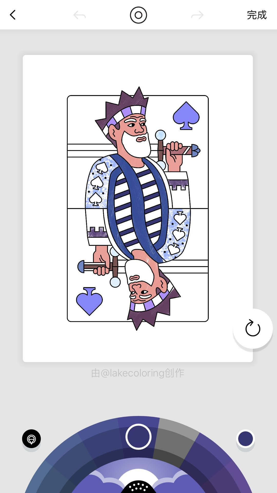
USER 2
Description of user: Female university student who likes to watch TV, play games, and watch game competitions.
Rough transcription of interview:
Context
- What materials do you like to use? Crayon; Good feeling but it’s hard to color some details
- Do you use interactive coloring apps? Use “Unicorn”, you do not need artistic skill and it is easy to operate, but it is hard to invent what you want. But with pen and paper it may be hard to begin the coloring.
- What kind of colors do you like to use? Preselected palette
- How would you describe your artistic style? Abstract
- Do you usually stick to one artform or do you like to explore? Like to explore
- What is something really difficult for you to create? When using paper you need many colors, which can get expensive. Using electronic apps it may be hard to get details or erase your work easily.
Clarification
- How did you choose where to start drawing? Begin with triangle shapes
- How did you choose which coloring utensils to use? Randomly chose
- How do you choose which colors to use? Started with black to draw the draft, and then filled it in
- What is the thinking behind your workspace organization? The workspace should be clean
Image of coloring page:
Step 4: Synthesis of findings
- Users enjoy simple color palettes with limited choices
- Being able to zoom in and be precise is important in the user’s ability to draw freely
Checkpoint 3: Sketches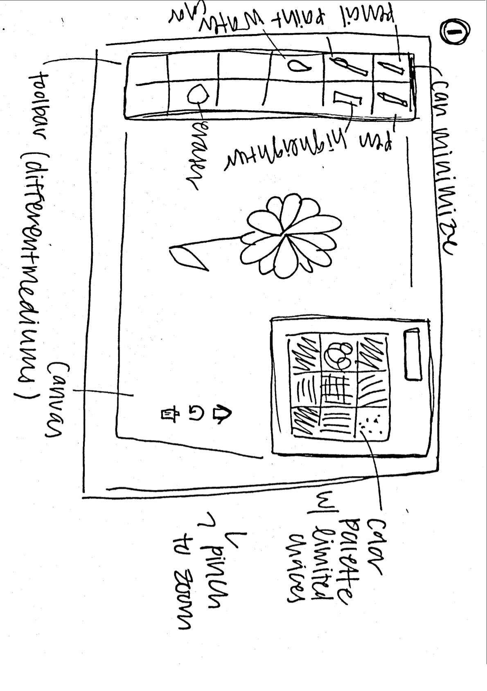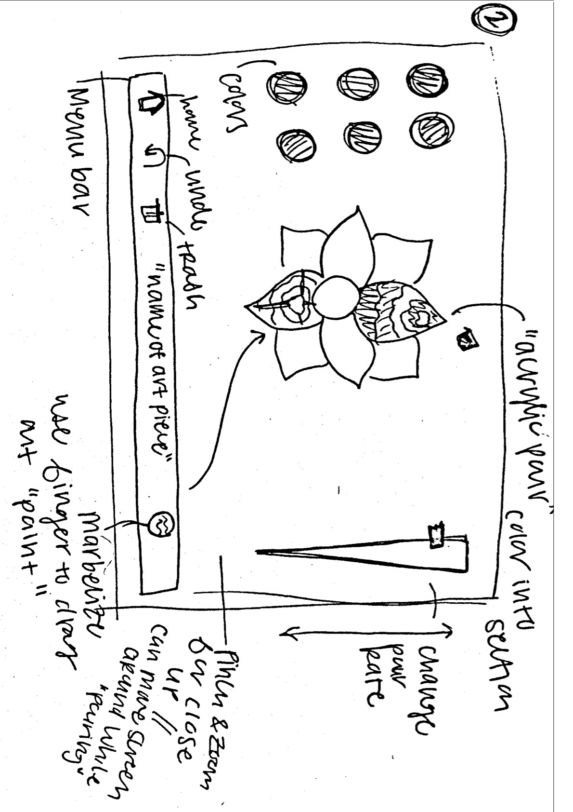
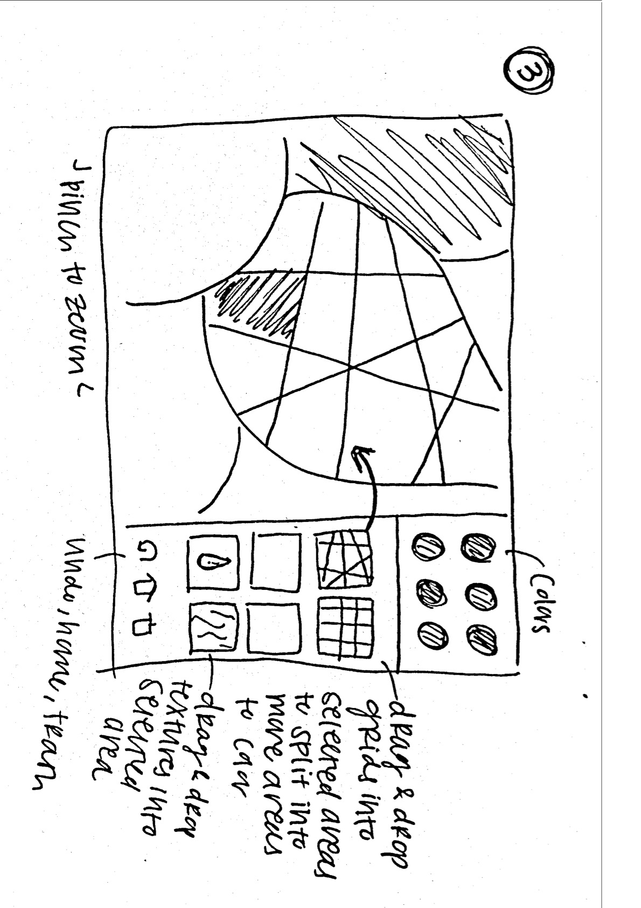
Cycle 2
Checkpoint 1: Parallel paper prototypes
A link to YouTube video
https://www.youtube.com/watch?v=gqPrMwobjZs&feature=youtu.be
Paper prototypes
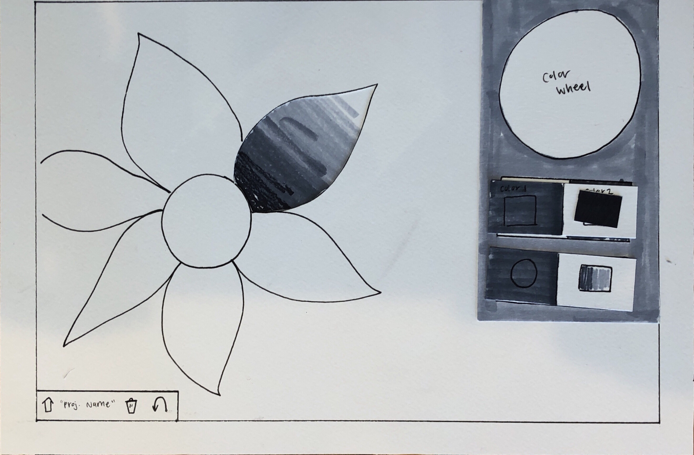
Prototype 1: Gradient Fill
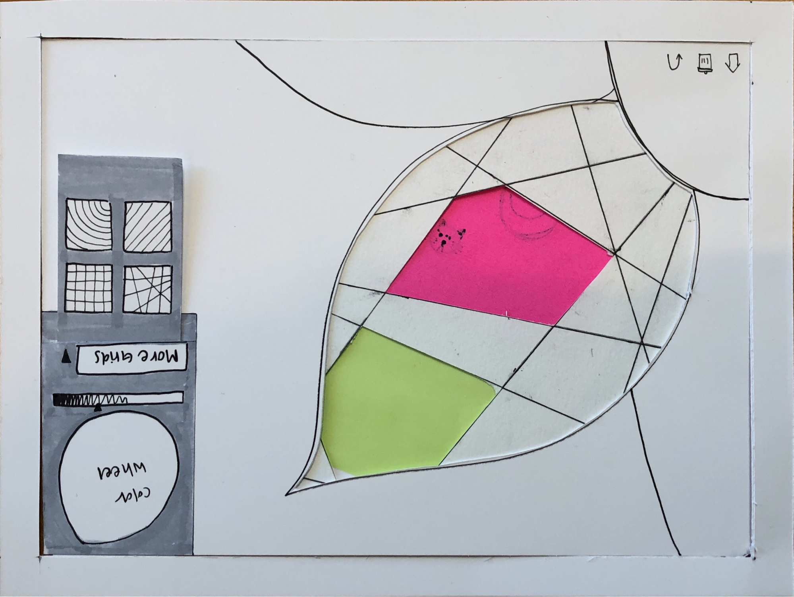
Prototype 2: More Grids
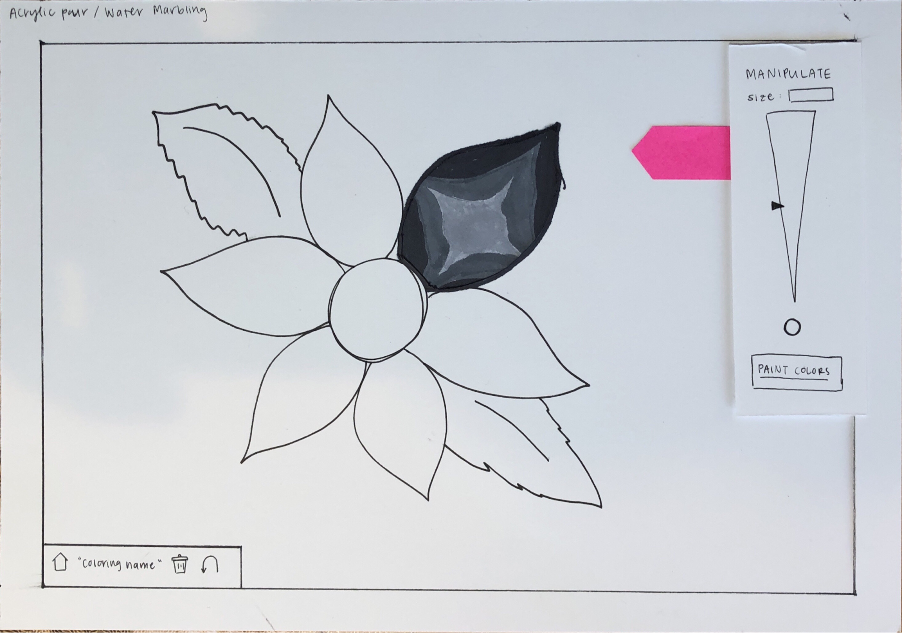
Prototype 3: Acrylic Pour/Water Marbling Technique
Checkpoint 3: Discount usability testing
Step 1: Written study plan
1. (2 min) Introductions
- Who we are
- Purpose of this study (user interface design class)
- What data we’ll collect and how we’ll use it (basic using habit improve app)
- Given that context, want to participate in this study?
2. (3 min) Get context: Learn about their coloring habits
- What are ways in which you typically do art or coloring?
- Have you used a coloring or art app before?
- What are some pros and cons of digital vs pen/paper coloring?
- Are you familiar with the art techniques acrylic pouring and water marbling?
3.(3 min) Explain think aloud. One of us demonstrates while taking notes.
4. (5 min) Ask participants to color in a drawing
- Ask for clarification:
- Was there anything that wasn’t intuitive?
- Any questions about the function of the app?
- Do you think the acrylic pour/water marbling design is intuitive to users who might not know what those art techniques are?
- Which prototype did you enjoy more?
5.(1 min) Thank participants for their time.
Step 2: User study
USER 1
Description of user: Architecture major at UC Berkeley, pursuing a career in UI design
Rough transcription of interview:
Context
- What are ways in which you typically do art or coloring? For architecture there’s both drawing on pen/paper and then creating models on the computer. For UI I use apps such as Adobe Illustrator.
- Have you used a coloring or art app before? Yes, sometimes I draw on my iPad
- What are some pros and cons to digital vs pen/paper coloring? When using pen and paper the piece is a little more special because there’s less forgiveness for error and it’s more unique. You can organize your tools the way you want to and take the time to research and invest in different mediums and tools. But, digital is really convenient because it puts all the tools on one device.
- Are you familiar with the art techniques acrylic pouring and water marbling? Yes
Clarification
- Was there anything that wasn’t intuitive/any suggestions? For the grid prototype, I was a little unsure how to put the grid into the petal. At first I thought if you tapped it, the grid would automatically fill it. Maybe put an icon or text that tells the user to drag and drop.
- Any questions about the function of the app? How can I switch from one petal to another?
- Do you think the acrylic pour/water marbling design is intuitive to users who might not know what those techniques are? Based on this prototype I think it might be a little tricky for people to realize they can swirl the paint. Since the prototype goes from the paint poured to it already manipulated, I think it would be easier for other users to understand if there were more intermedial steps to showcase that tool more.
- Which prototype did you enjoy more? I liked the acrylic pouring one more. I liked the freedom to mix and manipulate the paint.
Notes from study:
- Acrylic Pour/Water Marbling Prototype
- Found the pull out tool bar easily
- Understood what motions were needed to manipulate the paint correctly
- Was able to easily figure out how to zoom
- Tried to tap the grid to place instead of drag
USER 2
Description of user: Pharmacy major at University of the Pacific, enjoys bullet journaling
Rough transcription of interview:
Context
- What are ways in which you typically do art or coloring? Designing bullet journal pages
- Have you used a coloring or art app before? No
- What are some pros and cons to digital vs pen/paper coloring? With bullet journaling I like a lot of clean, straight lines. This is sometimes stressful when I’m using a pen, but I think that makes the creation a little more satisfying when I finish.
- Are you familiar with the art techniques acrylic pouring and water marbling? Yes
Clarification
- Was there anything that wasn’t intuitive/any suggestions? I wasn’t quite sure how the choose the color in the grids prototype. I understand the color wheel, but was kind of confused by the horizontal bar underneath the wheel. For the acrylic pour prototype, I think it would be nice to show the different effects of various manipulations, like sizes or swirling.
- Any questions about the function of the app? How do you know the petal you want to fill in has been selected?
- Do you think the acrylic pour/water marbling design is intuitive to users who might not know what those techniques are? I think they might not understand what it means to “manipulate” the paint. Maybe a clearer word choice or something visual to infer what that tool is could help them.
- Which prototype did you enjoy more? The grids prototype, I like how you can make things more detailed by zooming in and adding more coloring spots.
Notes from study:
- Acrylic Pour/Water Marbling Prototype
- Found pull out tool bar easily
- Able to choose different colors
- Tapped to color instead of pressing and holding down
- Confused about the manipulation “size” tool
- Able to zoom in using pinch and zoom
- Dragged and adjusted grid into flower petal
- Used color wheel but not horizontal “brightness” bar below
Step 3: Synthesis of findings
- The “manipulate” button on the acrylic pour prototype is somewhat unclear, especially for users unfamiliar with the technique.
- How to know that you have chosen a specific section is unclear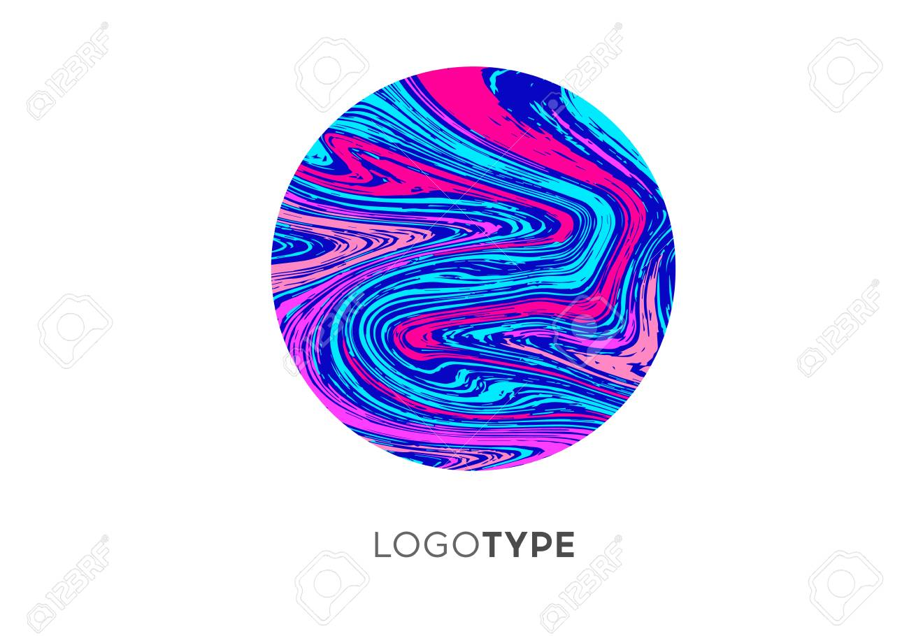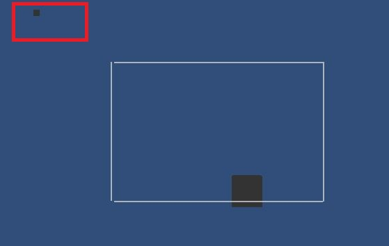
Cycle 3
Checkpoint 1: Implementation prototype: Event handlers
Checkpoint 2: Implementation prototype: Touch gestures
Checkpoint 3: Implementation prototype: Paper.js
Checkpoint 4: Revised paper prototype
A link to a YouTube video
https://youtu.be/wtaTLDuCuBU
One image of revised paper prototype
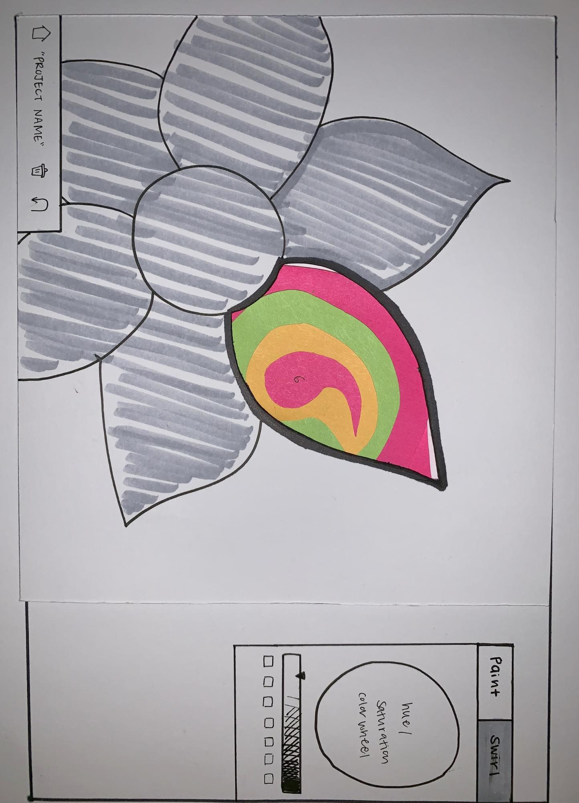
Cycle 4
Checkpoint 1: Interactive application prototype
A link to a YouTube video
https://youtu.be/Y1FOvyLu9u8
What changed since the revised paper prototype
When we started coding the interactive application, we realized that the color swirling function was beyond the scope of our abilities. We also realized that having a pool of paint spread out in an odd shape and being able to change that shape was going to be difficult to code as well, so we decided to simplify it down to a circle. Furthermore, we decided to add a function where users can fill in the specific bounded areas by toggling the setting.
Checkpoint 2: Discount usability testing
A synthesis of feedback from studio
Our evaluators at studio liked the creativity of our prototype. One thing we’ve been worried about through the design process is having users unfamiliar with the art technique our application is based on. The evaluators liked that we included a simple tutorial in our revised prototype. One thing they recommended was to offer some more control to the user. Our prototype made really “messy” art and our evaluators were interested in having an option to make their artwork more symmetric.
2+ questions you had about the interactive prototype
How to make a shape behind the outline of the mandala?
How to make a circle/How to control the size of the circle?
How to make multiple layers/canvas?
A synthesis of what you learned from the final usability study
Overall both the users really enjoyed the application. They both said the coloring style was very unique and interesting. The interface of our application was simple and easy to navigate, so even though the circle-making coloring process was something they were unfamiliar with, they were able to find out how to use it quickly. They found the short blurb underneath the different settings helpful. One of users wasn’t really sure what “Color Pour” meant based on just the label but was able to use it correctly after clicking on the button and reading the description of the function. The other user really enjoyed being able to make multiple layers of color with the “Color Pour” and “Color Fill” settings. Both also really liked the ability to color individual elements by dragging the cursor. One thing we realized while doing the usability study was that dragging the cursor to make the circle bigger worked fine, but if you wanted to make it smaller, it didn’t work and would create a ripple-like effect within the circle. While this was in fact just us not taking into account what happens when you decrease the radius, the user thought it was really cool.
A link to the GitHub Repository
https://github.com/cs160-summer-2019/p2-paperjs-TLHHWK.git
Design Archive Pins
https://www.pinterest.com/pin/670614200745372386/